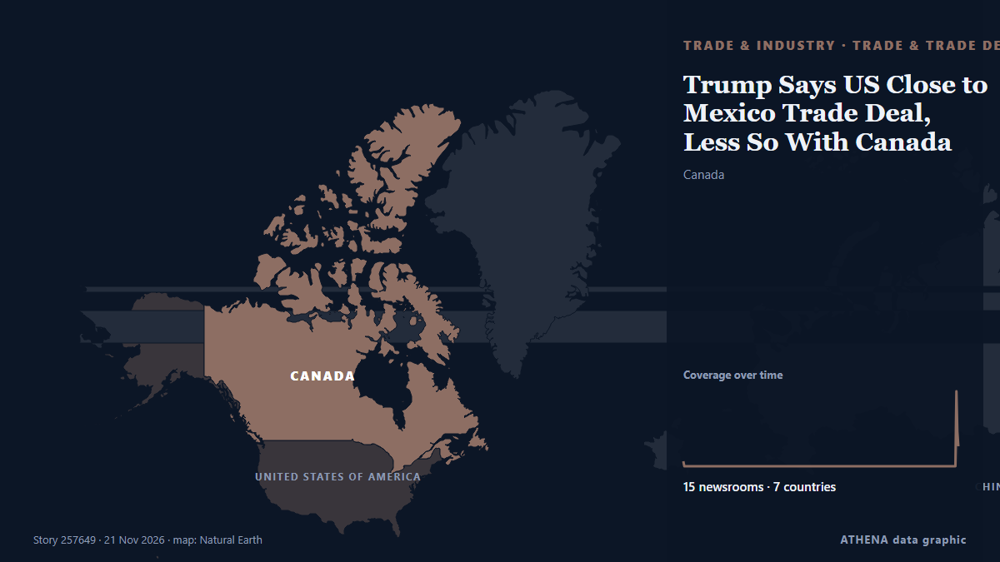

Trump Says US Close to Mexico Trade Deal, Less So With Canada

President Donald Trump said the US is closing in on a trade deal with Mexico, while indicating that separate negotiations with Canada are not as far along. de Livemint
Relayé de façon indépendante par 15 médias dans 7 pays depuis le 5 mai ; premier à l'annoncer : CBC News (alternative feed) ; la couverture faiblit. ATHENA juge le risque modéré (2.6/10), surtout en raison de la gravité des dommages décrits et de sa portée géographique et sectorielle. La confiance est de 87 % (élevée) : 15 médias indépendants le confirment, avec une fiabilité moyenne des sources de 73 %. Médias par pays : Canada (12), États-Unis (6), Inde (4). Couverture : du 5 mai au 21 nov., 13562 heures.
Pourquoi c'est important: Les perturbations du commerce, de l'industrie ou des infrastructures se propagent le long des chaînes d'approvisionnement et changent coûts et délais au loin.
Ce qui a changé : 4 nouveaux articles de 4 rédactions dans les 24 heures jusqu'au 21 nov..
Premier titre : Ecuadorian politicians warn about legal provisions in free trade deal
AutomatiséSélectionné, regroupé et noté selon la méthode publiée d'ATHENA à partir de 17 médias indépendants. Le titre est celui du média ; les phrases d'ATHENA suivent des modèles fixes - aucune IA générative ne les rédige. Comment ça marche →
Comment lire cette page
- Ce que vous lisez
- 15 médias dans 7 pays ont rapporté cet événement. Les reportages ci-dessous sont classés selon leur ordre de parution ; chaque titre ouvre l'article original. ATHENA n'écrit aucun reportage.
- Notre lecture
- Sous surveillance — Les reportages décrivent une action, ou une décision encore à prendre, entre des États ou des groupes armés. ATHENA suit la suite des événements. Nous guettons quatre types d'évolution : rien de plus, une action ouverte et revendiquée, une action menée par des tiers ou sans revendication, et un accident ou un malentendu. Nous ne prédisons pas lequel se produira.
- Quelle base de preuves
- Correcte Plusieurs médias indépendants concordent, mais le tableau peut encore changer.
Après retrait des doublons, des éléments hors sujet et périmés, 14 des 27 reportages listés sont retenus ; 93 % des titres correspondent à l'événement.
- Ce que cela ne veut pas dire
- ATHENA mesure la façon dont un événement est rapporté, pas sa véracité. Ce n'est ni une prévision, ni un jugement sur qui a raison, ni un conseil.
- Ce qui la changerait
- Des reportages d'autres médias indépendants montrant une évolution différente, ou une confirmation ou un démenti ferme d'une source officielle.
Lecture R2 · actualisée à chaque mise à jour de cette page. ATHENA n'a pas encore publié de bilan de ces lectures ; il sera lié ici le moment venu.
En un coup d'œil
Sélectionné, noté et rédigé par la méthodologie publiée d'ATHENA. Aucun rédacteur n'intervient sur un événement en particulier. Comment il est produit ›
| 05 May 15:35 UTC | 1 |
|---|---|
| 07 May 15:35 UTC | 0 |
| 09 May 15:35 UTC | 0 |
| 11 May 15:35 UTC | 0 |
| 13 May 15:35 UTC | 0 |
| 15 May 15:35 UTC | 0 |
| 17 May 15:35 UTC | 0 |
| 19 May 15:35 UTC | 0 |
| 21 May 15:35 UTC | 0 |
| 23 May 15:35 UTC | 0 |
| 25 May 15:35 UTC | 0 |
| 27 May 15:35 UTC | 0 |
| 29 May 15:35 UTC | 0 |
| 31 May 15:35 UTC | 0 |
| 02 Jun 15:35 UTC | 0 |
| 04 Jun 15:35 UTC | 0 |
| 06 Jun 15:35 UTC | 0 |
| 08 Jun 15:35 UTC | 0 |
| 10 Jun 15:35 UTC | 0 |
| 12 Jun 15:35 UTC | 0 |
| 14 Jun 15:35 UTC | 0 |
| 16 Jun 15:35 UTC | 0 |
| 18 Jun 15:35 UTC | 0 |
| 20 Jun 15:35 UTC | 0 |
| 22 Jun 15:35 UTC | 0 |
| 24 Jun 15:35 UTC | 0 |
| 26 Jun 15:35 UTC | 0 |
| 28 Jun 15:35 UTC | 0 |
| 30 Jun 15:35 UTC | 0 |
| 02 Jul 15:35 UTC | 0 |
| 04 Jul 15:35 UTC | 0 |
| 06 Jul 15:35 UTC | 0 |
| 08 Jul 15:35 UTC | 0 |
| 10 Jul 15:35 UTC | 0 |
| 12 Jul 15:35 UTC | 0 |
| 14 Jul 15:35 UTC | 0 |
| 16 Jul 15:35 UTC | 0 |
| 18 Jul 15:35 UTC | 0 |
| 20 Jul 15:35 UTC | 0 |
| 22 Jul 15:35 UTC | 0 |
| 24 Jul 15:35 UTC | 0 |
| 26 Jul 15:35 UTC | 0 |
| 28 Jul 15:35 UTC | 0 |
| 30 Jul 15:35 UTC | 0 |
| 01 Aug 15:35 UTC | 0 |
| 03 Aug 15:35 UTC | 0 |
| 05 Aug 15:35 UTC | 0 |
| 07 Aug 15:35 UTC | 0 |
| 09 Aug 15:35 UTC | 0 |
| 11 Aug 15:35 UTC | 0 |
| 13 Aug 15:35 UTC | 0 |
| 15 Aug 15:35 UTC | 0 |
| 17 Aug 15:35 UTC | 0 |
| 19 Aug 15:35 UTC | 0 |
| 21 Aug 15:35 UTC | 0 |
| 23 Aug 15:35 UTC | 0 |
| 25 Aug 15:35 UTC | 0 |
| 27 Aug 15:35 UTC | 0 |
| 29 Aug 15:35 UTC | 0 |
| 31 Aug 15:35 UTC | 0 |
| 02 Sep 15:35 UTC | 0 |
| 04 Sep 15:35 UTC | 0 |
| 06 Sep 15:35 UTC | 0 |
| 08 Sep 15:35 UTC | 0 |
| 10 Sep 15:35 UTC | 0 |
| 12 Sep 15:35 UTC | 0 |
| 14 Sep 15:35 UTC | 0 |
| 16 Sep 15:35 UTC | 0 |
| 18 Sep 15:35 UTC | 0 |
| 20 Sep 15:35 UTC | 0 |
| 22 Sep 15:35 UTC | 0 |
| 24 Sep 15:35 UTC | 0 |
| 26 Sep 15:35 UTC | 0 |
| 28 Sep 15:35 UTC | 0 |
| 30 Sep 15:35 UTC | 0 |
| 02 Oct 15:35 UTC | 0 |
| 04 Oct 15:35 UTC | 0 |
| 06 Oct 15:35 UTC | 0 |
| 08 Oct 15:35 UTC | 0 |
| 10 Oct 15:35 UTC | 0 |
| 12 Oct 15:35 UTC | 0 |
| 14 Oct 15:35 UTC | 0 |
| 16 Oct 15:35 UTC | 0 |
| 18 Oct 15:35 UTC | 0 |
| 20 Oct 15:35 UTC | 0 |
| 22 Oct 15:35 UTC | 0 |
| 24 Oct 15:35 UTC | 0 |
| 26 Oct 15:35 UTC | 0 |
| 28 Oct 15:35 UTC | 0 |
| 30 Oct 15:35 UTC | 0 |
| 01 Nov 15:35 UTC | 0 |
| 03 Nov 15:35 UTC | 0 |
| 05 Nov 15:35 UTC | 0 |
| 07 Nov 15:35 UTC | 0 |
| 09 Nov 15:35 UTC | 0 |
| 11 Nov 15:35 UTC | 0 |
| 13 Nov 15:35 UTC | 0 |
| 15 Nov 15:35 UTC | 0 |
| 17 Nov 15:35 UTC | 0 |
| 19 Nov 15:35 UTC | 0 |
| 21 Nov 15:35 UTC | 0 |
| 23 Nov 15:35 UTC | 0 |
| 25 Nov 15:35 UTC | 0 |
| 27 Nov 15:35 UTC | 0 |
| 29 Nov 15:35 UTC | 0 |
| 01 Dec 15:35 UTC | 0 |
| 03 Dec 15:35 UTC | 0 |
| 05 Dec 15:35 UTC | 0 |
| 07 Dec 15:35 UTC | 0 |
| 09 Dec 15:35 UTC | 0 |
| 11 Dec 15:35 UTC | 0 |
| 13 Dec 15:35 UTC | 0 |
| 15 Dec 15:35 UTC | 0 |
| 17 Dec 15:35 UTC | 0 |
| 19 Dec 15:35 UTC | 0 |
| 21 Dec 15:35 UTC | 0 |
| 23 Dec 15:35 UTC | 0 |
| 25 Dec 15:35 UTC | 0 |
| 27 Dec 15:35 UTC | 0 |
| 29 Dec 15:35 UTC | 0 |
| 31 Dec 15:35 UTC | 0 |
| 02 Jan 15:35 UTC | 0 |
| 04 Jan 15:35 UTC | 0 |
| 06 Jan 15:35 UTC | 0 |
| 08 Jan 15:35 UTC | 0 |
| 10 Jan 15:35 UTC | 0 |
| 12 Jan 15:35 UTC | 0 |
| 14 Jan 15:35 UTC | 0 |
| 16 Jan 15:35 UTC | 0 |
| 18 Jan 15:35 UTC | 0 |
| 20 Jan 15:35 UTC | 0 |
| 22 Jan 15:35 UTC | 0 |
| 24 Jan 15:35 UTC | 0 |
| 26 Jan 15:35 UTC | 0 |
| 28 Jan 15:35 UTC | 0 |
| 30 Jan 15:35 UTC | 0 |
| 01 Feb 15:35 UTC | 0 |
| 03 Feb 15:35 UTC | 0 |
| 05 Feb 15:35 UTC | 0 |
| 07 Feb 15:35 UTC | 0 |
| 09 Feb 15:35 UTC | 0 |
| 11 Feb 15:35 UTC | 0 |
| 13 Feb 15:35 UTC | 0 |
| 15 Feb 15:35 UTC | 0 |
| 17 Feb 15:35 UTC | 0 |
| 19 Feb 15:35 UTC | 0 |
| 21 Feb 15:35 UTC | 0 |
| 23 Feb 15:35 UTC | 0 |
| 25 Feb 15:35 UTC | 0 |
| 27 Feb 15:35 UTC | 0 |
| 01 Mar 15:35 UTC | 0 |
| 03 Mar 15:35 UTC | 0 |
| 05 Mar 15:35 UTC | 0 |
| 07 Mar 15:35 UTC | 0 |
| 09 Mar 15:35 UTC | 0 |
| 11 Mar 15:35 UTC | 0 |
| 13 Mar 15:35 UTC | 0 |
| 15 Mar 15:35 UTC | 0 |
| 17 Mar 15:35 UTC | 0 |
| 19 Mar 15:35 UTC | 0 |
| 21 Mar 15:35 UTC | 0 |
| 23 Mar 15:35 UTC | 0 |
| 25 Mar 15:35 UTC | 0 |
| 27 Mar 15:35 UTC | 0 |
| 29 Mar 15:35 UTC | 0 |
| 31 Mar 15:35 UTC | 0 |
| 02 Apr 15:35 UTC | 0 |
| 04 Apr 15:35 UTC | 0 |
| 06 Apr 15:35 UTC | 0 |
| 08 Apr 15:35 UTC | 0 |
| 10 Apr 15:35 UTC | 0 |
| 12 Apr 15:35 UTC | 0 |
| 14 Apr 15:35 UTC | 0 |
| 16 Apr 15:35 UTC | 0 |
| 18 Apr 15:35 UTC | 0 |
| 20 Apr 15:35 UTC | 0 |
| 22 Apr 15:35 UTC | 0 |
| 24 Apr 15:35 UTC | 0 |
| 26 Apr 15:35 UTC | 0 |
| 28 Apr 15:35 UTC | 0 |
| 30 Apr 15:35 UTC | 0 |
| 02 May 15:35 UTC | 0 |
| 04 May 15:35 UTC | 0 |
| 06 May 15:35 UTC | 0 |
| 08 May 15:35 UTC | 0 |
| 10 May 15:35 UTC | 0 |
| 12 May 15:35 UTC | 0 |
| 14 May 15:35 UTC | 0 |
| 16 May 15:35 UTC | 0 |
| 18 May 15:35 UTC | 0 |
| 20 May 15:35 UTC | 0 |
| 22 May 15:35 UTC | 0 |
| 24 May 15:35 UTC | 0 |
| 26 May 15:35 UTC | 0 |
| 28 May 15:35 UTC | 0 |
| 30 May 15:35 UTC | 0 |
| 01 Jun 15:35 UTC | 0 |
| 03 Jun 15:35 UTC | 0 |
| 05 Jun 15:35 UTC | 0 |
| 07 Jun 15:35 UTC | 0 |
| 09 Jun 15:35 UTC | 0 |
| 11 Jun 15:35 UTC | 0 |
| 13 Jun 15:35 UTC | 0 |
| 15 Jun 15:35 UTC | 0 |
| 17 Jun 15:35 UTC | 0 |
| 19 Jun 15:35 UTC | 0 |
| 21 Jun 15:35 UTC | 0 |
| 23 Jun 15:35 UTC | 0 |
| 25 Jun 15:35 UTC | 0 |
| 27 Jun 15:35 UTC | 0 |
| 29 Jun 15:35 UTC | 0 |
| 01 Jul 15:35 UTC | 0 |
| 03 Jul 15:35 UTC | 0 |
| 05 Jul 15:35 UTC | 0 |
| 07 Jul 15:35 UTC | 0 |
| 09 Jul 15:35 UTC | 0 |
| 11 Jul 15:35 UTC | 0 |
| 13 Jul 15:35 UTC | 0 |
| 15 Jul 15:35 UTC | 0 |
| 17 Jul 15:35 UTC | 0 |
| 19 Jul 15:35 UTC | 0 |
| 21 Jul 15:35 UTC | 0 |
| 23 Jul 15:35 UTC | 0 |
| 25 Jul 15:35 UTC | 0 |
| 27 Jul 15:35 UTC | 0 |
| 29 Jul 15:35 UTC | 0 |
| 31 Jul 15:35 UTC | 0 |
| 02 Aug 15:35 UTC | 0 |
| 04 Aug 15:35 UTC | 0 |
| 06 Aug 15:35 UTC | 0 |
| 08 Aug 15:35 UTC | 0 |
| 10 Aug 15:35 UTC | 0 |
| 12 Aug 15:35 UTC | 0 |
| 14 Aug 15:35 UTC | 0 |
| 16 Aug 15:35 UTC | 0 |
| 18 Aug 15:35 UTC | 0 |
| 20 Aug 15:35 UTC | 0 |
| 22 Aug 15:35 UTC | 0 |
| 24 Aug 15:35 UTC | 0 |
| 26 Aug 15:35 UTC | 0 |
| 28 Aug 15:35 UTC | 0 |
| 30 Aug 15:35 UTC | 0 |
| 01 Sep 15:35 UTC | 0 |
| 03 Sep 15:35 UTC | 0 |
| 05 Sep 15:35 UTC | 0 |
| 07 Sep 15:35 UTC | 0 |
| 09 Sep 15:35 UTC | 0 |
| 11 Sep 15:35 UTC | 0 |
| 13 Sep 15:35 UTC | 0 |
| 15 Sep 15:35 UTC | 0 |
| 17 Sep 15:35 UTC | 0 |
| 19 Sep 15:35 UTC | 0 |
| 21 Sep 15:35 UTC | 0 |
| 23 Sep 15:35 UTC | 0 |
| 25 Sep 15:35 UTC | 0 |
| 27 Sep 15:35 UTC | 0 |
| 29 Sep 15:35 UTC | 0 |
| 01 Oct 15:35 UTC | 0 |
| 03 Oct 15:35 UTC | 0 |
| 05 Oct 15:35 UTC | 0 |
| 07 Oct 15:35 UTC | 0 |
| 09 Oct 15:35 UTC | 0 |
| 11 Oct 15:35 UTC | 0 |
| 13 Oct 15:35 UTC | 0 |
| 15 Oct 15:35 UTC | 0 |
| 17 Oct 15:35 UTC | 0 |
| 19 Oct 15:35 UTC | 0 |
| 21 Oct 15:35 UTC | 0 |
| 23 Oct 15:35 UTC | 0 |
| 25 Oct 15:35 UTC | 0 |
| 27 Oct 15:35 UTC | 0 |
| 29 Oct 15:35 UTC | 0 |
| 31 Oct 15:35 UTC | 0 |
| 02 Nov 15:35 UTC | 0 |
| 04 Nov 15:35 UTC | 0 |
| 06 Nov 15:35 UTC | 0 |
| 08 Nov 15:35 UTC | 0 |
| 10 Nov 15:35 UTC | 0 |
| 12 Nov 15:35 UTC | 0 |
| 14 Nov 15:35 UTC | 0 |
| 16 Nov 15:35 UTC | 15 |
| 18 Nov 15:35 UTC | 7 |
| 20 Nov 15:35 UTC | 4 |
| 18 Nov 16:10 UTC | 3.0 |
|---|---|
| 18 Nov 18:45 UTC | 1.9 |
| 18 Nov 19:01 UTC | 3.0 |
| 21 Nov 17:34 UTC | 2.6 |
Pourquoi ces chiffres
Importance
Risque
Confiance
La couverture : qui l'a annoncé, et quand
titre tel que publié · ouvre l'original- CBC News (alternative feed) · Canada'If the U.S. doesn't want to do a deal, we're busy,' Carney says of ongoing trade talks
- NDTV · IndeEU Envoy Highlights Northeast's Role In Trade Pact During Assam Visit
- The Canadian Press (via CityNews) · CanadaEcuadorian politicians warn about legal provisions in free trade deal
- Atlantic Council · États-UnisCongress could soon rein in Trump’s tariffs on Canada. Here’s what that could look like.
- The New York Times (World) · États-UnisCarney and Xi Announce Canada-China Trade Pact
- Express Tribune · PakistanRs1.34-per-unit tariff hike likely
- Above the Law · États-UnisJudge Orders Trump Administration To Produce The Biglaw Deals And The Emails Behind Them
- The Canadian Press (via CityNews) · CanadaCanada, India on the cusp of finalizing free trade deal, says high envoy
- CBC News (alternative feed) · CanadaTrade talks between top Canada, U.S. officials ramping up: sources
- The Globe and Mail · CanadaCanada, India close to finalizing free trade deal, envoy says
- The Straits Times · SingapourAfter years on ice, Canada seeks trade-based reset with China: Minister
- The Canadian Press (via CityNews) · CanadaCarney meets Trump in China, says Canada’s U.S. trade ‘much more complex’ than China
- CBC News · CanadaOddly enough, this video game weighs in on Canada's fighter jet options
- The Canadian Press (via CityNews) · CanadaCarney says Canada’s growing trade ties with China are not a top concern for Trump
- Le Monde (English) · FranceCanada speeds up the thaw in its relationship with China
- The Globe and Mail · CanadaU.S. trade talks 'more complex' than China's, Carney says
- TRT World · TurquieTrump, Carney explore path to trade deal amid tariff tensions
- The Hindu · IndeIndia, Canada eye defence pact during Modi visit in December
- The New York Times (World) · États-UnisCarney and Trump Hold Unscheduled Trade Meeting at Asia Summit
- New York Times Business · États-UnisWatch: Canada’s Prime Minister on Negotiating With President Trump
- New York Times Business · États-UnisMark Carney Says Canada Will Not Back Down in Trade Talks With U.S.
- The Canadian Press (via CityNews) · CanadaCanada’s tightrope walk with China
- investingLive (ForexLive) · INTCanada seeks interim U.S. tariff deal by year-end, CBC reports
- Livemint · IndeTrump Says US Close to Mexico Trade Deal, Less So With Canada
- CBC News (alternative feed) · CanadaTrump says he's working on a 'fair' trade deal with Canada
- The Canadian Press (via CityNews) · CanadaTrump says Canada feeling ’emboldened’ but he’s seeking a ‘fair’ trade deal
- Hindustan Times · IndeIndia, Canada wrap up sixth round of trade talks ahead of Modi's visit next month